Раси та професії
Три раси по дві статі — шість типів героя. Раса зсуває стати вдвічі сильніше за стать. Професія береться квестом на 20, 40 і 60 рівнях; від раси вона не залежить.
Раси
| Раса | Вдача | Зріст | Повага на рівень | Спадкова гілка |
|---|---|---|---|---|
| Людина | середина по всіх статах | 1,75 м | 0% | людська звичка друга рука впертість клич роду (чоловік) голос роду (жінка) останній подих |
| Орк | сильний, витривалий, повільний | 1,9 м | +10% | товста шкура лють важка рука рев вождя (чоловік) поклик матері (жінка) не впаду |
| Ельф | швидкий, чуйний, крихкий | 1,85 м | -10% | лісова хода гостре око течія сили стріла предків (чоловік) пісня предків (жінка) подих гаю |
«Повага на рівень» — наскільки більше чи менше поваги треба набрати на кожен рівень, ніж людині. Жінкам треба на 5% менше.
Вигляд
По три варіанти аватара на кожну стать кожної раси — при створенні персонажа гравець вибере один. Вигляд стати не міняє.
Людина, чоловік
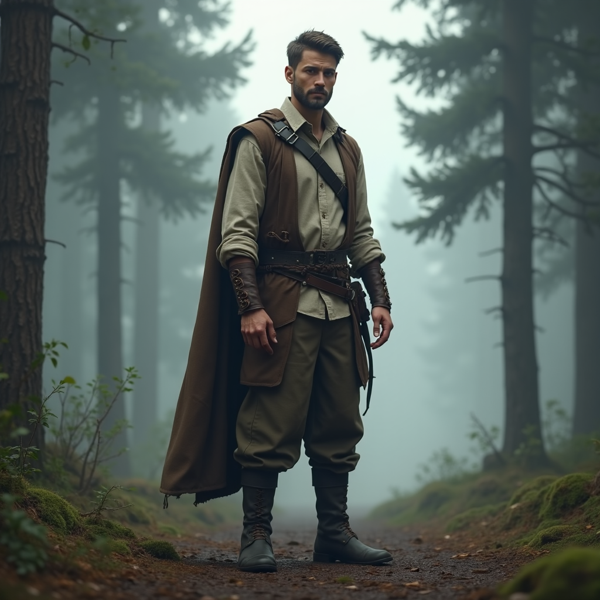

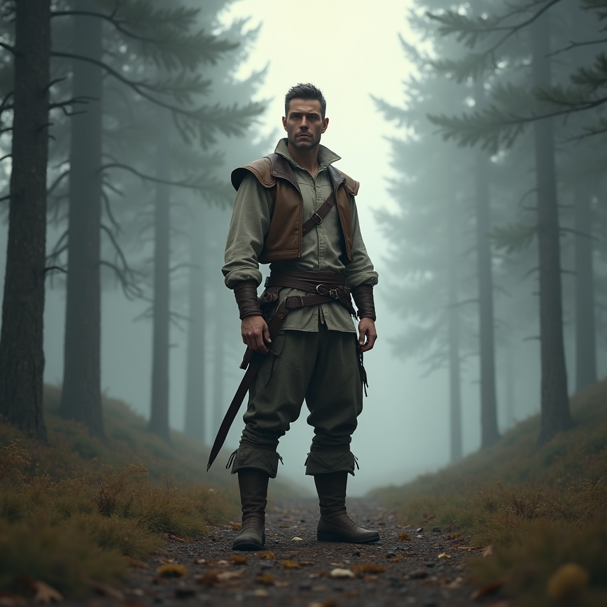
Промти (3)
варіант 1 · seed 7001 · FLUX dev Q4, 1024×1024, 28 кроків, guidance 3.5, euler/beta
Dark fantasy RPG character concept art, full-body portrait of a male human hero, viewed from a dynamic three-quarter angle, body turned slightly away from camera, not a head-on frontal pose, standing fully upright, the whole figure in frame from head to feet with margin around it, misty coniferous forest clearing in soft daylight, fog between tall pine trees. Body: male, an ordinary human of balanced, average build, about 1.75 m tall, natural human skin tone, rounded human ears. Clothing: simple starting adventurer clothing: plain linen shirt, brown leather vest, wool trousers, leather belt, worn leather boots. Hands empty, relaxed natural stance. Atmosphere: realistic and atmospheric, cinematic lighting, photorealistic skin and fabric, high detail texture, 8k resolution, Unreal Engine 5 style rendering.
негатив:
cartoon, anime, chibi, stylized, toy, plastic, sitting, seated, cropped feet, cropped head, front view, symmetric pose, text, watermark, armor, weapon
варіант 2 · seed 7002 · FLUX dev Q4, 1024×1024, 28 кроків, guidance 3.5, euler/beta
Dark fantasy RPG character concept art, full-body portrait of a male human hero, viewed from a dynamic three-quarter angle, body turned slightly away from camera, not a head-on frontal pose, standing fully upright, the whole figure in frame from head to feet with margin around it, misty coniferous forest clearing in soft daylight, fog between tall pine trees. Body: male, an ordinary human of balanced, average build, about 1.75 m tall, natural human skin tone, rounded human ears. Clothing: simple starting adventurer clothing: plain linen shirt, brown leather vest, wool trousers, leather belt, worn leather boots. Hands empty, relaxed natural stance. Atmosphere: realistic and atmospheric, cinematic lighting, photorealistic skin and fabric, high detail texture, 8k resolution, Unreal Engine 5 style rendering.
негатив:
cartoon, anime, chibi, stylized, toy, plastic, sitting, seated, cropped feet, cropped head, front view, symmetric pose, text, watermark, armor, weapon
варіант 3 · seed 7003 · FLUX dev Q4, 1024×1024, 28 кроків, guidance 3.5, euler/beta
Dark fantasy RPG character concept art, full-body portrait of a male human hero, viewed from a dynamic three-quarter angle, body turned slightly away from camera, not a head-on frontal pose, standing fully upright, the whole figure in frame from head to feet with margin around it, misty coniferous forest clearing in soft daylight, fog between tall pine trees. Body: male, an ordinary human of balanced, average build, about 1.75 m tall, natural human skin tone, rounded human ears. Clothing: simple starting adventurer clothing: plain linen shirt, brown leather vest, wool trousers, leather belt, worn leather boots. Hands empty, relaxed natural stance. Atmosphere: realistic and atmospheric, cinematic lighting, photorealistic skin and fabric, high detail texture, 8k resolution, Unreal Engine 5 style rendering.
негатив:
cartoon, anime, chibi, stylized, toy, plastic, sitting, seated, cropped feet, cropped head, front view, symmetric pose, text, watermark, armor, weapon
Людина, жінка
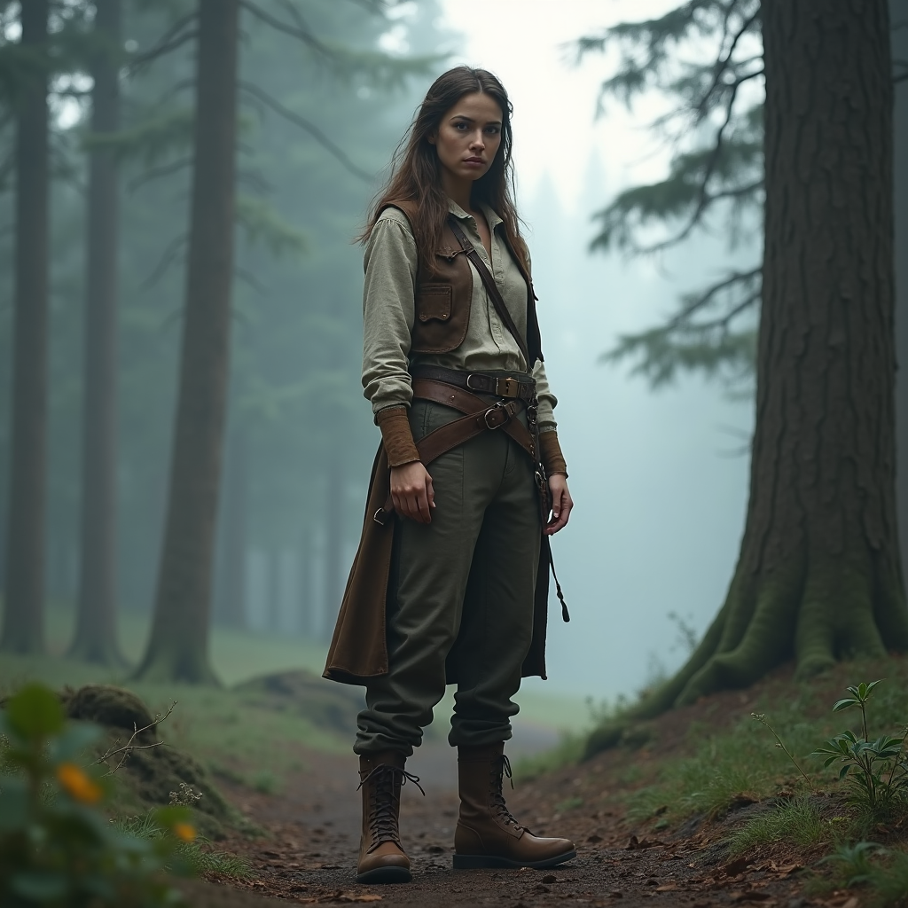
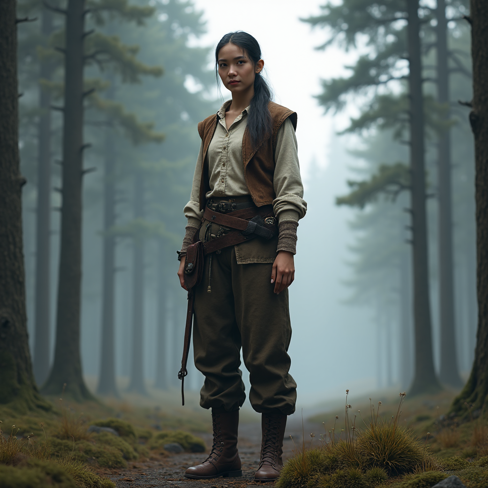
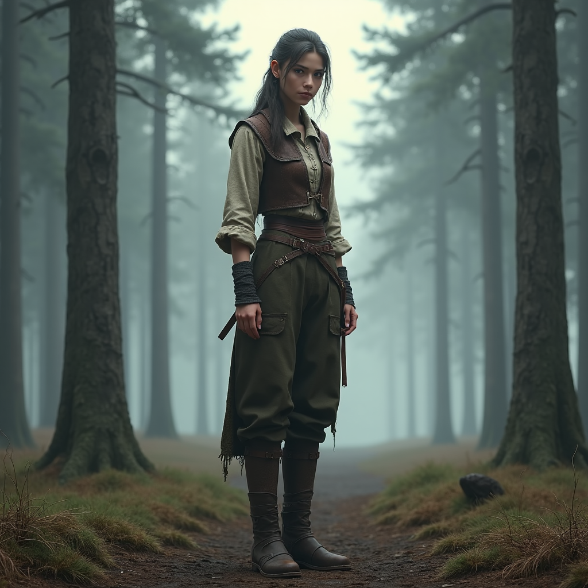
Промти (3)
варіант 1 · seed 7011 · FLUX dev Q4, 1024×1024, 28 кроків, guidance 3.5, euler/beta
Dark fantasy RPG character concept art, full-body portrait of a female human hero, viewed from a dynamic three-quarter angle, body turned slightly away from camera, not a head-on frontal pose, standing fully upright, the whole figure in frame from head to feet with margin around it, misty coniferous forest clearing in soft daylight, fog between tall pine trees. Body: female, an ordinary human of balanced, average build, about 1.75 m tall, natural human skin tone, rounded human ears. Clothing: simple starting adventurer clothing: plain linen shirt, brown leather vest, wool trousers, leather belt, worn leather boots, fully clothed, modest attire. Hands empty, relaxed natural stance. Atmosphere: realistic and atmospheric, cinematic lighting, photorealistic skin and fabric, high detail texture, 8k resolution, Unreal Engine 5 style rendering.
негатив:
cartoon, anime, chibi, stylized, toy, plastic, sitting, seated, cropped feet, cropped head, front view, symmetric pose, text, watermark, armor, weapon, nude, naked, topless, cleavage, lingerie, nsfw
варіант 2 · seed 7012 · FLUX dev Q4, 1024×1024, 28 кроків, guidance 3.5, euler/beta
Dark fantasy RPG character concept art, full-body portrait of a female human hero, viewed from a dynamic three-quarter angle, body turned slightly away from camera, not a head-on frontal pose, standing fully upright, the whole figure in frame from head to feet with margin around it, misty coniferous forest clearing in soft daylight, fog between tall pine trees. Body: female, an ordinary human of balanced, average build, about 1.75 m tall, natural human skin tone, rounded human ears. Clothing: simple starting adventurer clothing: plain linen shirt, brown leather vest, wool trousers, leather belt, worn leather boots, fully clothed, modest attire. Hands empty, relaxed natural stance. Atmosphere: realistic and atmospheric, cinematic lighting, photorealistic skin and fabric, high detail texture, 8k resolution, Unreal Engine 5 style rendering.
негатив:
cartoon, anime, chibi, stylized, toy, plastic, sitting, seated, cropped feet, cropped head, front view, symmetric pose, text, watermark, armor, weapon, nude, naked, topless, cleavage, lingerie, nsfw
варіант 3 · seed 7013 · FLUX dev Q4, 1024×1024, 28 кроків, guidance 3.5, euler/beta
Dark fantasy RPG character concept art, full-body portrait of a female human hero, viewed from a dynamic three-quarter angle, body turned slightly away from camera, not a head-on frontal pose, standing fully upright, the whole figure in frame from head to feet with margin around it, misty coniferous forest clearing in soft daylight, fog between tall pine trees. Body: female, an ordinary human of balanced, average build, about 1.75 m tall, natural human skin tone, rounded human ears. Clothing: simple starting adventurer clothing: plain linen shirt, brown leather vest, wool trousers, leather belt, worn leather boots, fully clothed, modest attire. Hands empty, relaxed natural stance. Atmosphere: realistic and atmospheric, cinematic lighting, photorealistic skin and fabric, high detail texture, 8k resolution, Unreal Engine 5 style rendering.
негатив:
cartoon, anime, chibi, stylized, toy, plastic, sitting, seated, cropped feet, cropped head, front view, symmetric pose, text, watermark, armor, weapon, nude, naked, topless, cleavage, lingerie, nsfw
Орк, чоловік

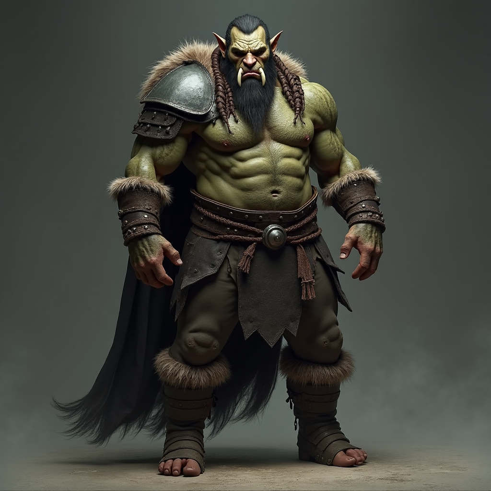
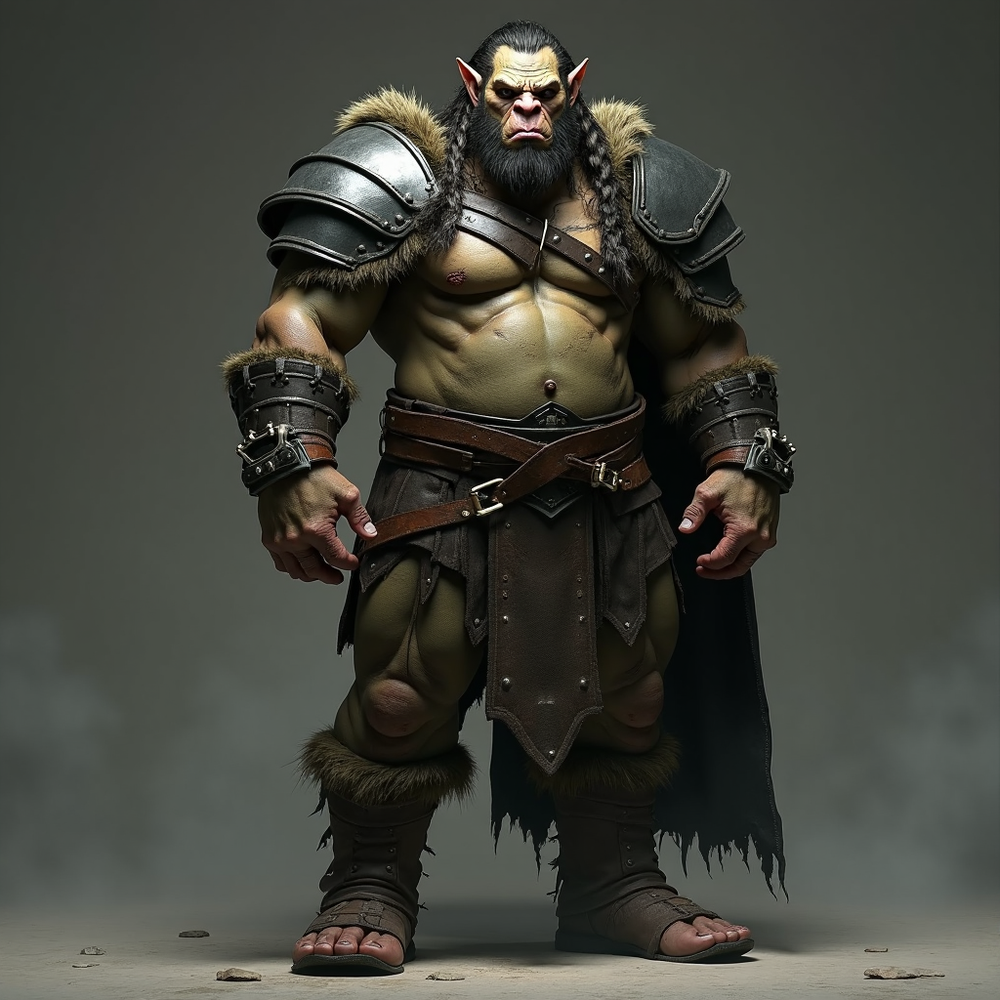
Промти (3)
варіант 1 · seed 9101 · FLUX dev Q4, 1024×1024, 28 кроків, guidance 3.5, euler/beta
Dark fantasy RPG character concept art, full-body portrait of a realistic male orc warrior, viewed from a dynamic three-quarter angle, body turned slightly away from camera, not a head-on frontal pose, standing fully upright, the whole figure in frame from head to feet with margin around it. Body: a grim powerful orc man about 1.9 m tall, muted olive green-brown skin with a rough weathered pore-detailed texture and old scars, a heavy brow, a broad strong jaw, prominent lower tusks jutting from the lower lip, short pointed ears, a coarse stern scowling face, long thick dark hair in several braids, a short rough beard, a massive heavily muscled build with broad shoulders, a thick neck and powerful arms and legs. Clothing: dark worn leather and iron armour: a leather breastplate with riveted iron plates, fur-trimmed leather pauldrons, leather bracers, a wide belt with pouches, leather trousers, heavy fur-topped leather boots, a ragged dark cloak behind. Hands empty, relaxed natural stance. Setting: a plain dark neutral background with soft atmospheric haze. Atmosphere: gritty and realistic like a live-action film, cinematic lighting, photorealistic skin, leather and metal, high detail texture, 8k resolution, Unreal Engine 5 style rendering.
негатив:
cartoon, anime, chibi, stylized, toy, plastic, sitting, seated, cropped feet, cropped head, front view, symmetric pose, text, watermark, weapon, Shrek, Pixar, Disney, animated movie, cute, chubby cheeks, bright green skin, smooth plastic skin, elf, beautiful model face
варіант 2 · seed 9102 · FLUX dev Q4, 1024×1024, 28 кроків, guidance 3.5, euler/beta
Dark fantasy RPG character concept art, full-body portrait of a realistic male orc warrior, viewed from a dynamic three-quarter angle, body turned slightly away from camera, not a head-on frontal pose, standing fully upright, the whole figure in frame from head to feet with margin around it. Body: a grim powerful orc man about 1.9 m tall, muted olive green-brown skin with a rough weathered pore-detailed texture and old scars, a heavy brow, a broad strong jaw, prominent lower tusks jutting from the lower lip, short pointed ears, a coarse stern scowling face, long thick dark hair in several braids, a short rough beard, a massive heavily muscled build with broad shoulders, a thick neck and powerful arms and legs. Clothing: dark worn leather and iron armour: a leather breastplate with riveted iron plates, fur-trimmed leather pauldrons, leather bracers, a wide belt with pouches, leather trousers, heavy fur-topped leather boots, a ragged dark cloak behind. Hands empty, relaxed natural stance. Setting: a plain dark neutral background with soft atmospheric haze. Atmosphere: gritty and realistic like a live-action film, cinematic lighting, photorealistic skin, leather and metal, high detail texture, 8k resolution, Unreal Engine 5 style rendering.
негатив:
cartoon, anime, chibi, stylized, toy, plastic, sitting, seated, cropped feet, cropped head, front view, symmetric pose, text, watermark, weapon, Shrek, Pixar, Disney, animated movie, cute, chubby cheeks, bright green skin, smooth plastic skin, elf, beautiful model face
варіант 3 · seed 9103 · FLUX dev Q4, 1024×1024, 28 кроків, guidance 3.5, euler/beta
Dark fantasy RPG character concept art, full-body portrait of a realistic male orc warrior, viewed from a dynamic three-quarter angle, body turned slightly away from camera, not a head-on frontal pose, standing fully upright, the whole figure in frame from head to feet with margin around it. Body: a grim powerful orc man about 1.9 m tall, muted olive green-brown skin with a rough weathered pore-detailed texture and old scars, a heavy brow, a broad strong jaw, prominent lower tusks jutting from the lower lip, short pointed ears, a coarse stern scowling face, long thick dark hair in several braids, a short rough beard, a massive heavily muscled build with broad shoulders, a thick neck and powerful arms and legs. Clothing: dark worn leather and iron armour: a leather breastplate with riveted iron plates, fur-trimmed leather pauldrons, leather bracers, a wide belt with pouches, leather trousers, heavy fur-topped leather boots, a ragged dark cloak behind. Hands empty, relaxed natural stance. Setting: a plain dark neutral background with soft atmospheric haze. Atmosphere: gritty and realistic like a live-action film, cinematic lighting, photorealistic skin, leather and metal, high detail texture, 8k resolution, Unreal Engine 5 style rendering.
негатив:
cartoon, anime, chibi, stylized, toy, plastic, sitting, seated, cropped feet, cropped head, front view, symmetric pose, text, watermark, weapon, Shrek, Pixar, Disney, animated movie, cute, chubby cheeks, bright green skin, smooth plastic skin, elf, beautiful model face
Орк, жінка
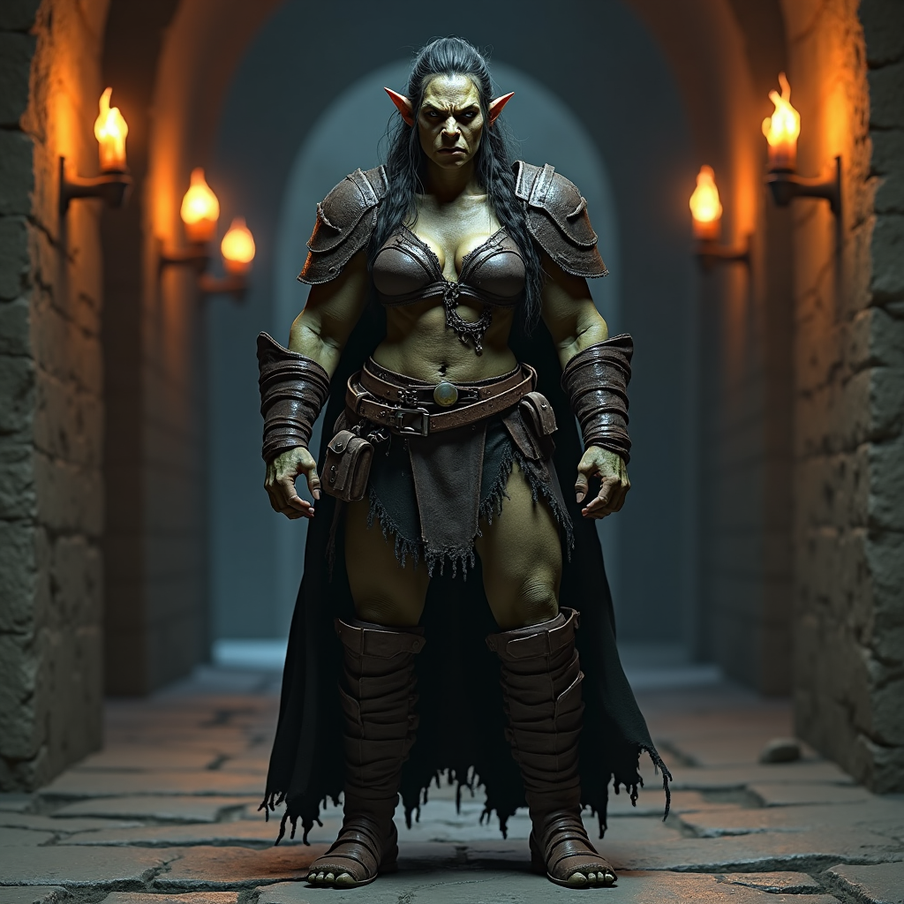
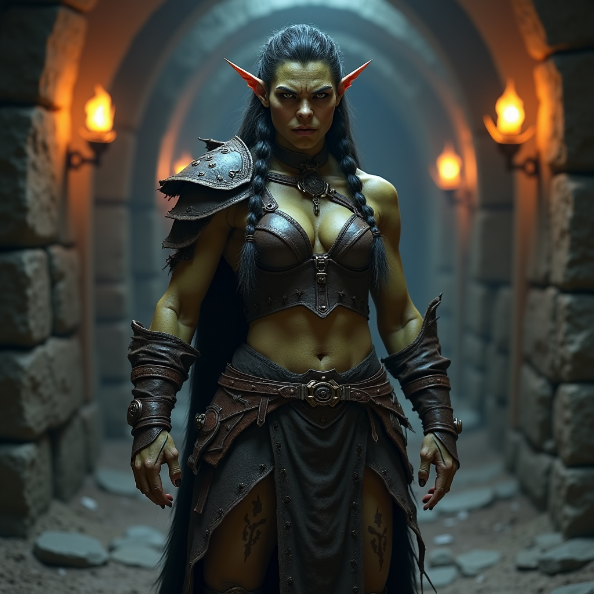
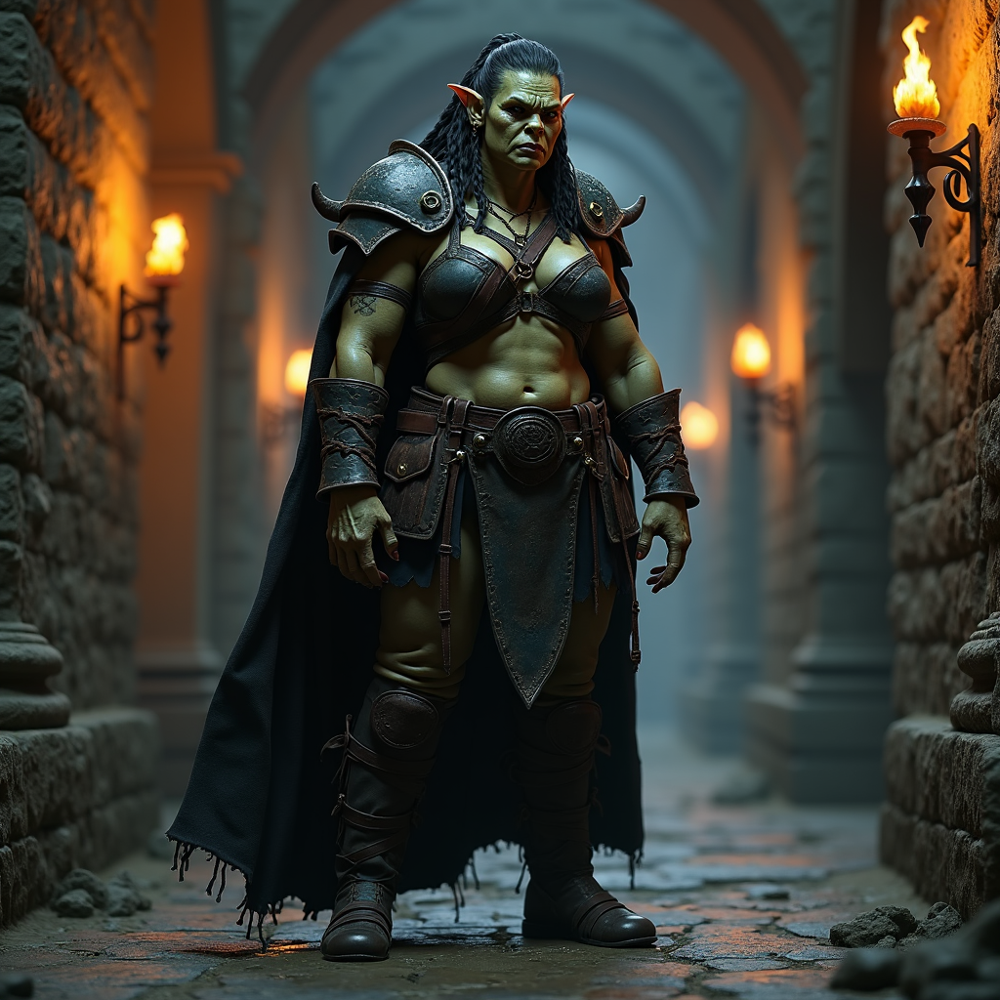
Промти (3)
варіант 1 · seed 9111 · FLUX dev Q4, 1024×1024, 28 кроків, guidance 3.5, euler/beta
Dark fantasy RPG character concept art, full-body portrait of a realistic female orc warrior, viewed from a dynamic three-quarter angle, body turned slightly away from camera, not a head-on frontal pose, standing fully upright, the whole figure in frame from head to feet with margin around it. Body: a grim powerful orc woman about 1.9 m tall, muted olive green-brown skin with a rough weathered pore-detailed texture, a heavy brow, a broad strong jaw, small lower tusks jutting from the lower lip, short pointed ears, a coarse stern scowling face, long thick dark hair in several braids, strong muscular arms and shoulders, a large full heavy bust, a defined waist and wide strong hips and thick thighs. Clothing: dark worn leather armour fully covering her: a fitted moulded leather breastplate shaped to her large bust, leather pauldrons and bracers, a wide belt with pouches, leather trousers, heavy leather boots, a ragged dark cloak behind. Hands empty, relaxed natural stance. Setting: a dark stone dungeon corridor lit by wall torches, warm torchlight against cold shadows. Atmosphere: gritty and realistic like a live-action film, cinematic lighting, photorealistic skin, leather and metal, high detail texture, 8k resolution, Unreal Engine 5 style rendering.
негатив:
cartoon, anime, chibi, stylized, toy, plastic, sitting, seated, cropped feet, cropped head, front view, symmetric pose, text, watermark, weapon, nude, naked, topless, cleavage, lingerie, nsfw, Shrek, Fiona, Pixar, Disney, animated movie, cute, chubby cheeks, bright green skin, smooth plastic skin, elf, beautiful model face
варіант 2 · seed 9112 · FLUX dev Q4, 1024×1024, 28 кроків, guidance 3.5, euler/beta
Dark fantasy RPG character concept art, full-body portrait of a realistic female orc warrior, viewed from a dynamic three-quarter angle, body turned slightly away from camera, not a head-on frontal pose, standing fully upright, the whole figure in frame from head to feet with margin around it. Body: a grim powerful orc woman about 1.9 m tall, muted olive green-brown skin with a rough weathered pore-detailed texture, a heavy brow, a broad strong jaw, small lower tusks jutting from the lower lip, short pointed ears, a coarse stern scowling face, long thick dark hair in several braids, strong muscular arms and shoulders, a large full heavy bust, a defined waist and wide strong hips and thick thighs. Clothing: dark worn leather armour fully covering her: a fitted moulded leather breastplate shaped to her large bust, leather pauldrons and bracers, a wide belt with pouches, leather trousers, heavy leather boots, a ragged dark cloak behind. Hands empty, relaxed natural stance. Setting: a dark stone dungeon corridor lit by wall torches, warm torchlight against cold shadows. Atmosphere: gritty and realistic like a live-action film, cinematic lighting, photorealistic skin, leather and metal, high detail texture, 8k resolution, Unreal Engine 5 style rendering.
негатив:
cartoon, anime, chibi, stylized, toy, plastic, sitting, seated, cropped feet, cropped head, front view, symmetric pose, text, watermark, weapon, nude, naked, topless, cleavage, lingerie, nsfw, Shrek, Fiona, Pixar, Disney, animated movie, cute, chubby cheeks, bright green skin, smooth plastic skin, elf, beautiful model face
варіант 3 · seed 9113 · FLUX dev Q4, 1024×1024, 28 кроків, guidance 3.5, euler/beta
Dark fantasy RPG character concept art, full-body portrait of a realistic female orc warrior, viewed from a dynamic three-quarter angle, body turned slightly away from camera, not a head-on frontal pose, standing fully upright, the whole figure in frame from head to feet with margin around it. Body: a grim powerful orc woman about 1.9 m tall, muted olive green-brown skin with a rough weathered pore-detailed texture, a heavy brow, a broad strong jaw, small lower tusks jutting from the lower lip, short pointed ears, a coarse stern scowling face, long thick dark hair in several braids, strong muscular arms and shoulders, a large full heavy bust, a defined waist and wide strong hips and thick thighs. Clothing: dark worn leather armour fully covering her: a fitted moulded leather breastplate shaped to her large bust, leather pauldrons and bracers, a wide belt with pouches, leather trousers, heavy leather boots, a ragged dark cloak behind. Hands empty, relaxed natural stance. Setting: a dark stone dungeon corridor lit by wall torches, warm torchlight against cold shadows. Atmosphere: gritty and realistic like a live-action film, cinematic lighting, photorealistic skin, leather and metal, high detail texture, 8k resolution, Unreal Engine 5 style rendering.
негатив:
cartoon, anime, chibi, stylized, toy, plastic, sitting, seated, cropped feet, cropped head, front view, symmetric pose, text, watermark, weapon, nude, naked, topless, cleavage, lingerie, nsfw, Shrek, Fiona, Pixar, Disney, animated movie, cute, chubby cheeks, bright green skin, smooth plastic skin, elf, beautiful model face
Ельф, чоловік

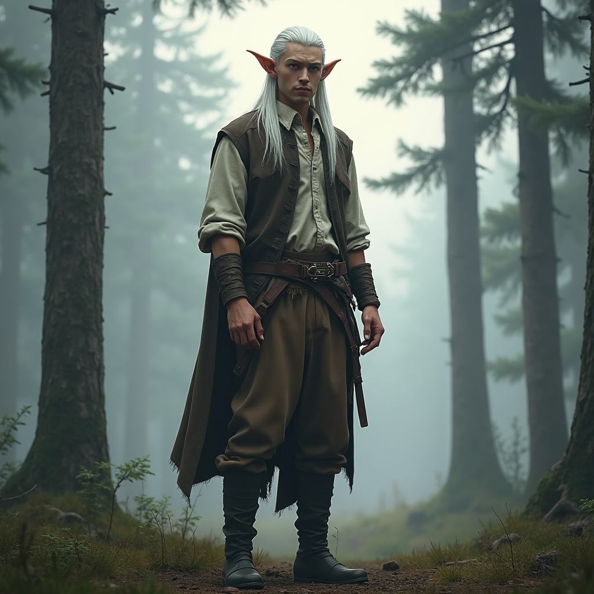
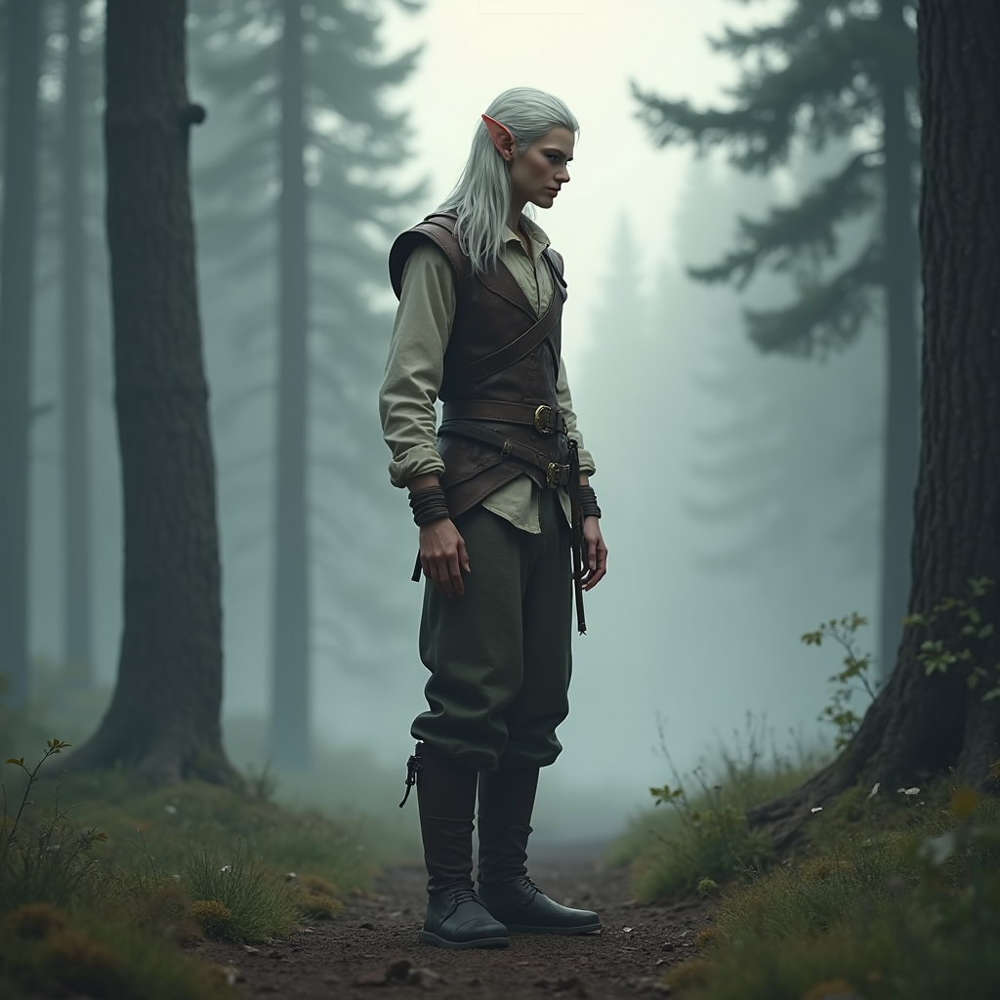
Промти (3)
варіант 1 · seed 7201 · FLUX dev Q4, 1024×1024, 28 кроків, guidance 3.5, euler/beta
Dark fantasy RPG character concept art, full-body portrait of a male elf hero, viewed from a dynamic three-quarter angle, body turned slightly away from camera, not a head-on frontal pose, standing fully upright, the whole figure in frame from head to feet with margin around it, misty coniferous forest clearing in soft daylight, fog between tall pine trees. Body: male, an elf: pale skin, slender and thinner than a human, about 1.85 m tall, long pointed ears, light agile and perceptive but fragile. Clothing: simple starting adventurer clothing: plain linen shirt, brown leather vest, wool trousers, leather belt, worn leather boots. Hands empty, relaxed natural stance. Atmosphere: realistic and atmospheric, cinematic lighting, photorealistic skin and fabric, high detail texture, 8k resolution, Unreal Engine 5 style rendering.
негатив:
cartoon, anime, chibi, stylized, toy, plastic, sitting, seated, cropped feet, cropped head, front view, symmetric pose, text, watermark, armor, weapon
варіант 2 · seed 8202 · FLUX dev Q4, 1024×1024, 28 кроків, guidance 3.5, euler/beta
Dark fantasy RPG character concept art, full-body portrait of a male elf hero, viewed from a dynamic three-quarter angle, body turned slightly away from camera, not a head-on frontal pose, standing fully upright, the whole figure in frame from head to feet with margin around it, misty coniferous forest clearing in soft daylight, fog between tall pine trees. Body: male, an elf: pale skin, slender and thinner than a human, about 1.85 m tall, long straight white or pale straw-white hair, small sharp pointed ears, an elongated narrow face, light agile and perceptive but fragile. Clothing: simple starting adventurer clothing: plain linen shirt, brown leather vest, wool trousers, leather belt, worn leather boots. Hands empty, relaxed natural stance. Atmosphere: realistic and atmospheric, cinematic lighting, photorealistic skin and fabric, high detail texture, 8k resolution, Unreal Engine 5 style rendering.
негатив:
cartoon, anime, chibi, stylized, toy, plastic, sitting, seated, cropped feet, cropped head, front view, symmetric pose, text, watermark, armor, weapon, long ears, huge ears, dark hair, black hair, brown hair, round face
варіант 3 · seed 8203 · FLUX dev Q4, 1024×1024, 28 кроків, guidance 3.5, euler/beta
Dark fantasy RPG character concept art, full-body portrait of a male elf hero, viewed from a dynamic three-quarter angle, body turned slightly away from camera, not a head-on frontal pose, standing fully upright, the whole figure in frame from head to feet with margin around it, misty coniferous forest clearing in soft daylight, fog between tall pine trees. Body: male, an elf: pale skin, slender and thinner than a human, about 1.85 m tall, long straight white or pale straw-white hair, small sharp pointed ears, an elongated narrow face, light agile and perceptive but fragile. Clothing: simple starting adventurer clothing: plain linen shirt, brown leather vest, wool trousers, leather belt, worn leather boots. Hands empty, relaxed natural stance. Atmosphere: realistic and atmospheric, cinematic lighting, photorealistic skin and fabric, high detail texture, 8k resolution, Unreal Engine 5 style rendering.
негатив:
cartoon, anime, chibi, stylized, toy, plastic, sitting, seated, cropped feet, cropped head, front view, symmetric pose, text, watermark, armor, weapon, long ears, huge ears, dark hair, black hair, brown hair, round face
Ельф, жінка


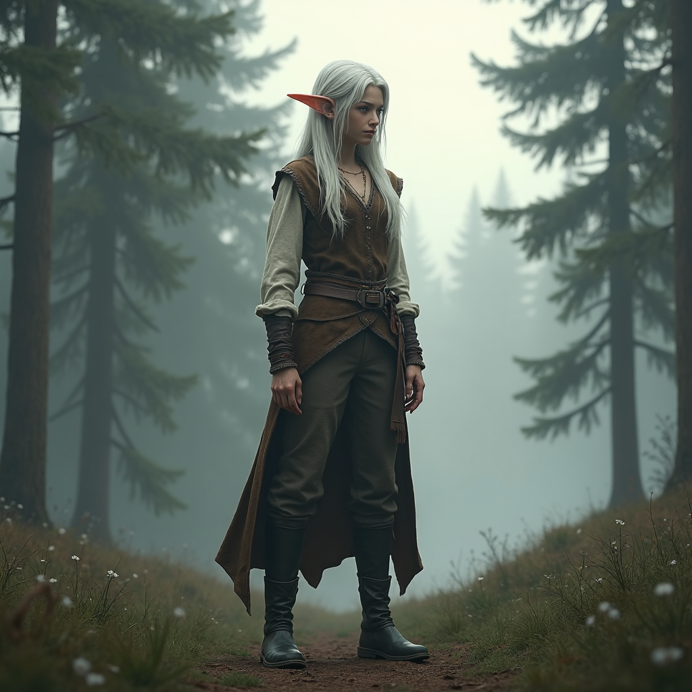
Промти (3)
варіант 1 · seed 8211 · FLUX dev Q4, 1024×1024, 28 кроків, guidance 3.5, euler/beta
Dark fantasy RPG character concept art, full-body portrait of a female elf hero, viewed from a dynamic three-quarter angle, body turned slightly away from camera, not a head-on frontal pose, standing fully upright, the whole figure in frame from head to feet with margin around it, misty coniferous forest clearing in soft daylight, fog between tall pine trees. Body: female, an elf: pale skin, slender and thinner than a human, about 1.85 m tall, long straight white or pale straw-white hair, small sharp pointed ears, an elongated narrow face, light agile and perceptive but fragile. Clothing: simple starting adventurer clothing: plain linen shirt, brown leather vest, wool trousers, leather belt, worn leather boots, fully clothed, modest attire. Hands empty, relaxed natural stance. Atmosphere: realistic and atmospheric, cinematic lighting, photorealistic skin and fabric, high detail texture, 8k resolution, Unreal Engine 5 style rendering.
негатив:
cartoon, anime, chibi, stylized, toy, plastic, sitting, seated, cropped feet, cropped head, front view, symmetric pose, text, watermark, armor, weapon, nude, naked, topless, cleavage, lingerie, nsfw, long ears, huge ears, dark hair, black hair, brown hair, round face
варіант 2 · seed 7212 · FLUX dev Q4, 1024×1024, 28 кроків, guidance 3.5, euler/beta
Dark fantasy RPG character concept art, full-body portrait of a female elf hero, viewed from a dynamic three-quarter angle, body turned slightly away from camera, not a head-on frontal pose, standing fully upright, the whole figure in frame from head to feet with margin around it, misty coniferous forest clearing in soft daylight, fog between tall pine trees. Body: female, an elf: pale skin, slender and thinner than a human, about 1.85 m tall, long pointed ears, light agile and perceptive but fragile. Clothing: simple starting adventurer clothing: plain linen shirt, brown leather vest, wool trousers, leather belt, worn leather boots, fully clothed, modest attire. Hands empty, relaxed natural stance. Atmosphere: realistic and atmospheric, cinematic lighting, photorealistic skin and fabric, high detail texture, 8k resolution, Unreal Engine 5 style rendering.
негатив:
cartoon, anime, chibi, stylized, toy, plastic, sitting, seated, cropped feet, cropped head, front view, symmetric pose, text, watermark, armor, weapon, nude, naked, topless, cleavage, lingerie, nsfw
варіант 3 · seed 8213 · FLUX dev Q4, 1024×1024, 28 кроків, guidance 3.5, euler/beta
Dark fantasy RPG character concept art, full-body portrait of a female elf hero, viewed from a dynamic three-quarter angle, body turned slightly away from camera, not a head-on frontal pose, standing fully upright, the whole figure in frame from head to feet with margin around it, misty coniferous forest clearing in soft daylight, fog between tall pine trees. Body: female, an elf: pale skin, slender and thinner than a human, about 1.85 m tall, long straight white or pale straw-white hair, small sharp pointed ears, an elongated narrow face, light agile and perceptive but fragile. Clothing: simple starting adventurer clothing: plain linen shirt, brown leather vest, wool trousers, leather belt, worn leather boots, fully clothed, modest attire. Hands empty, relaxed natural stance. Atmosphere: realistic and atmospheric, cinematic lighting, photorealistic skin and fabric, high detail texture, 8k resolution, Unreal Engine 5 style rendering.
негатив:
cartoon, anime, chibi, stylized, toy, plastic, sitting, seated, cropped feet, cropped head, front view, symmetric pose, text, watermark, armor, weapon, nude, naked, topless, cleavage, lingerie, nsfw, long ears, huge ears, dark hair, black hair, brown hair, round face
Дерева вмінь етапу 1 для кожного типу (6 аркушів)
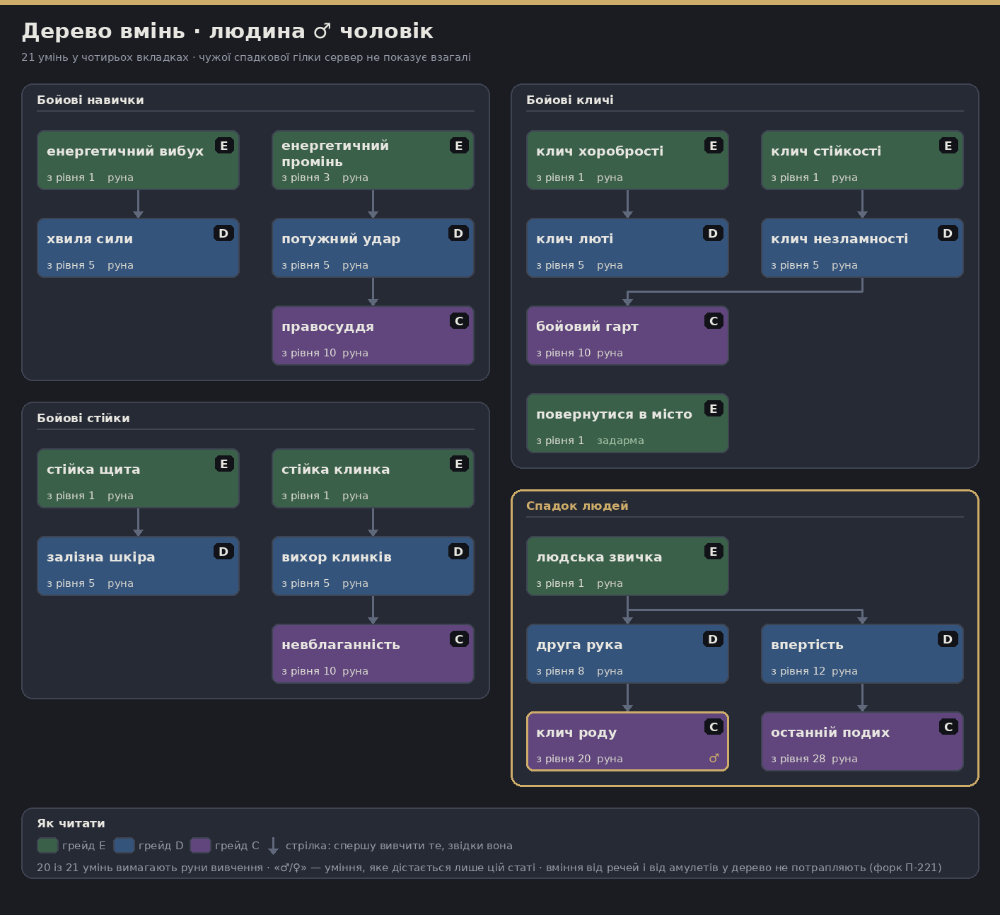
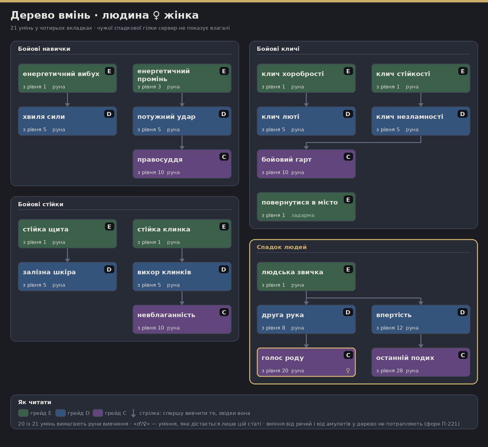
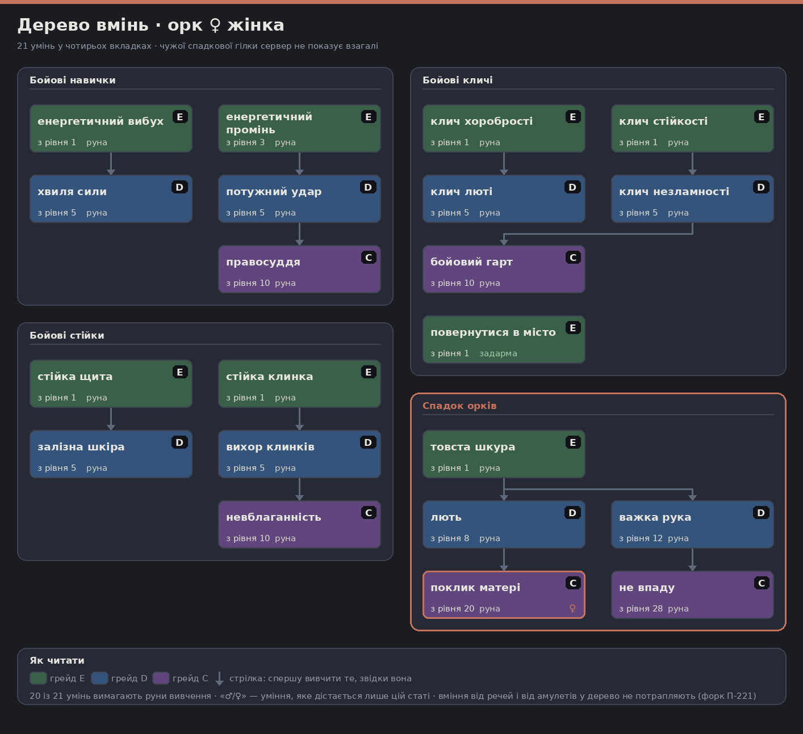
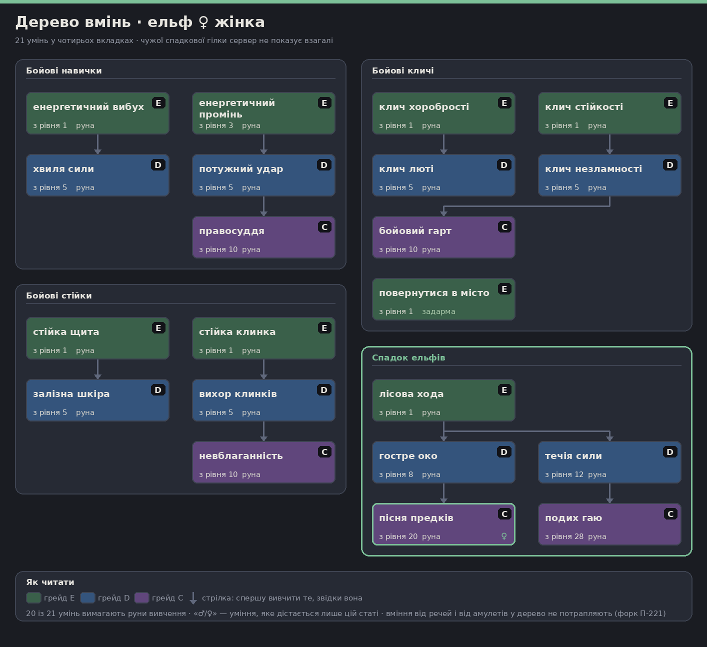
Етапи
| Етап | Назва | Рівні | Професій |
|---|---|---|---|
| 1 | початковий | 1–19 | 0 |
| 2 | середній | 20–39 | 4 |
| 3 | основна професія | 40–59 | 8 |
| 4 | найвищий | 60–75 | 8 |
Професії
Етап 2 — середній
| Професія | Хто це | Квест переходу | Основний ланцюг | Прихована гілка |
|---|---|---|---|---|
| Воїн з 20 рів. | Той, хто стоїть попереду й не питає чому. | Перша кров Крайня Брама, майстер зброї вбити вовкулака ×20; принести шкура ×10 | D розсіченняшкода ×1,6; мана 36 D оглушливий ударшкода ×0,3; : спритність ×0,7, 12 с; мана 38 D бойовий клич ротибойовий клич роти: сила ×1,25, 20 с; мана 38 C стійка твердиністійка твердині: витривалість ×1,35, 25 с; мана 42 | Кров і сіль Гілка про те, щоб битися пораненим краще, ніж цілим. · відкриває: амулет «амулет солоної крові» C жага боюжага бою: сила ×1,5, 20 с; мана 40C рубець за рубецьшкода ×2; мана 52 C залізна піснязалізна пісня: сила ×1,6, 24 с; мана 44 C не падатине падати: витривалість ×1,6, 15 с; мана 46 |
| Стрілець з 20 рів. | Той, хто вирішує бій ще до того, як до нього дійдуть. | Двадцять пер Стільна, ловчий двір вбити химера ×15; принести кора дуба ×20 | D влучний пострілшкода ×1,7; мана 36 D підсічкашкода ×0,3; : спритність ×0,55, 10 с; мана 38 D соколине окосоколине око: чуття ×1,3, 24 с; мана 38 C град стрілшкода ×0,9; мана 69 | Мисливські вузли Гілка мисливця, а не вояка: пастки, жили, терпіння. · відкриває: убити вовк ×200 C пастка з жилшкода ×0,3; : спритність ×0,4, 8 с; мана 45C стріла-жалошкода ×0,3; : витривалість ×0,7, 14 с; мана 49 C подвійне диханняподвійне дихання: спритність ×1,6, 22 с; мана 44 C подвійний пострілшкода ×2,1; мана 55 |
| Чародій з 20 рів. | Той, кому стихії відповідають, але не коряться. | Три знаки Стільна, вежа письма вбити наг ×15; принести руна підняття D грейду ×2 | D крижаний списшкода ×1,8; мана 36 D вогняне колошкода ×1,1; мана 56 D печать розумушкода ×0,3; : чуття ×0,6, 12 с; мана 42 C мантія стихіймантія стихій: інтелект ×1,3, 26 с; мана 42 | Шепіт порожнечі Те, що лишається, коли з магії прибрати стихію. · відкриває: синтез C порожній поглядшкода ×0,3; : інтелект ×0,5, 12 с; мана 45C розрившкода ×2,2; мана 52 C тишашкода ×0,3; : чуття ×0,45, 10 с; мана 51 C шепіт порожнечішкода ×2,4; мана 55 |
| Послушник з 20 рів. | Той, хто тримає інших на ногах, поки сам стоїть. | Сім поклонів Крайня Брама, святиня вбити упир ×15; принести зілля лікування ×5 | D слово спокоюлік ×1; мана 44 D благословення родублагословення роду: витривалість ×1,25, 22 с; мана 34 D промінь віришкода ×1,4; мана 45 C печать кволостішкода ×0,3; : сила ×0,65, 12 с; мана 47 | Стежка попелу Віра, яка більше не питає дозволу лікувати чи карати. · відкриває: амулет «амулет сірого попелу» C попіл на ранилік ×0,8; мана 58C кара за гординюшкода ×1,9; мана 52 C свічка й лезошкода ×2,2; мана 52 C щит словащит слова: витривалість ×1,5, 20 с; мана 46 |
Етап 3 — основна професія
| Професія | Хто це | Квест переходу | Основний ланцюг | Прихована гілка |
|---|---|---|---|---|
| Латник з 40 рів., від: Воїн | Стіна, об яку розбивається натовп. | Витримати облогу Лан, вартова вежа вбити кабанолюд-вождь ×30; принести залізо ×15 | C удар щитомшкода ×0,3; : спритність ×0,6, 10 с; мана 56 B непохитністьнепохитність: витривалість ×1,5, 30 с; мана 54 B викликшкода ×0,3; : сила ×0,7, 12 с; мана 64 B залізний обідшкода ×1,3; мана 101 | Обітниця каменю Той, хто стояв проти каменю, сам стає каменем. · відкриває: убити голчастий скелеїд ×150 B кам'яна шкіракам'яна шкіра: витривалість ×1,7, 20 с; мана 56B вага горишкода ×0,3; : спритність ×0,45, 12 с; мана 67 B розколшкода ×2,4; мана 76 |
| Шалений з 40 рів., від: Воїн | Дві зброї, жодного щита й дуже коротке терпіння. | Не спинятись Гірський Поріг, яма боїв вбити звіролюд-берсерк ×30; принести зілля лікування ×10 | C шалшал: сила ×1,45, 20 с; мана 50 B вихор залізашкода ×1,25; мана 88 B кривавий укусшкода ×2; мана 69 B остання лютьостання лють: спритність ×1,55, 18 с; мана 62 | Звірина частка Те, що лишилось у крові від предків, які бігали на чотирьох. · відкриває: амулет «амулет вовчого ікла» B вовчий нюхвовчий нюх: чуття ×1,5, 22 с; мана 56B рватишкода ×2,3; мана 72 B крок за межукрок за межу: спритність ×1,8, 16 с; мана 60 B гонгон: спритність ×1,4, 18 с; мана 64 |
| Слідопит з 40 рів., від: Стрілець | Той, хто знає, де ціль буде, а не де вона є. | Слід у сніг Скеляр, застава ловчих вбити вепр-руйнівник ×30; принести шкура ×25 | C пробивна стрілашкода ×2; мана 60 B постріл у жилушкода ×0,3; : сила ×0,6, 12 с; мана 60 B стрілецький спокійстрілецький спокій: чуття ×1,45, 26 с; мана 58 B зливашкода ×1,2; мана 101 | Мова лісу Ліс сам підказує, кого й де чекати. · відкриває: синтез B стежка звірастежка звіра: спритність ×1,4, 24 с; мана 56B мова лісумова лісу: чуття ×1,6, 26 с; мана 56 B жаливашкода ×0,3; : витривалість ×0,6, 14 с; мана 67 B постріл крізь гілляшкода ×2,5; мана 76 |
| Тінь з 40 рів., від: Стрілець | Той, кого бачать один раз — і востаннє. | Тиха робота Попелище, нічний двір вбити тіньовий некро-ірбіс ×30; принести гроші ×20000 | C удар у спинушкода ×2,2; мана 60 B розчинитисьрозчинитись: спритність ×1,5, 16 с; мана 54 B отруйне лезошкода ×0,3; : витривалість ×0,55, 14 с; мана 64 B перерізатишкода ×2,4; мана 74 | Безшумний крок Мистецтво не бути там, куди дивляться. · відкриває: амулет «амулет нічного шовку» B сліпа плямашкода ×0,3; : чуття ×0,5, 10 с; мана 62B тінь на п'ятитінь на п'яти: чуття ×1,5, 20 с; мана 60 B сіль у ранішкода ×0,3; : витривалість ×0,4, 16 с; мана 67 B удар нізвідкишкода ×2,7; мана 76 |
| Вогнедій з 40 рів., від: Чародій | Той, хто торгується з вогнем і поки що виграє. | Не згоріти першим Попелище, вежа жару вбити проклятий кристалічний скорпіон-нежить ×30; принести сірка ×15 | C вогняний списшкода ×2,1; мана 60 B попіл під ногамишкода ×1,4; мана 88 B жар у жилахжар у жилах: інтелект ×1,45, 26 с; мана 58 B плавленняшкода ×0,3; : витривалість ×0,55, 14 с; мана 69 | Громова жила Друга стихія, яку вогнедій витягує з тієї самої жили. · відкриває: убити двоголовий беркут-громовержець ×120 B блискавкашкода ×2,4; мана 67B грімшкода ×1,5; мана 98 B вогонь у кровівогонь у крові: інтелект ×1,8, 24 с; мана 60 B жила небажила неба: чуття ×1,5, 22 с; мана 64 |
| Некромант з 40 рів., від: Чародій | Той, для кого труп — це ще не кінець розмови. | Розмова з мертвим Попелище, некрополь вбити двоголовий кістяний гончак склепу ×30; принести кістяний порох ×15 | C дотик прахушкода ×2; мана 60 B вінок гнилішкода ×1,3; мана 88 B печать могилишкода ×0,3; : спритність ×0,5, 14 с; мана 64 B плащ мертвихплащ мертвих: витривалість ×1,5, 26 с; мана 62 | Кісткова гребля Кістка як матеріал, а не як залишок. · відкриває: синтез B кістяний частокілшкода ×0,3; : спритність ×0,45, 12 с; мана 62B кісткова гребляшкода ×1,7; мана 91 B жнивашкода ×1,6; мана 98 B тавро прахушкода ×2,6; мана 76 |
| Світоч з 40 рів., від: Послушник | Той, завдяки кому інші доходять до кінця бою. | Нікого не лишити Лан, шпиталь вбити ведмежий патріарх ×25; принести зілля лікування ×20 | C світло на ранилік ×1,4; мана 72 B хоругвахоругва: витривалість ×1,4, 26 с; мана 54 B слово силислово сили: сила ×1,4, 26 с; мана 58 B останній подих світлалік ×1,8; мана 88 | Тиха молитва Сила, яку не видно й не чути — і саме тому вона діє. · відкриває: амулет «амулет білого воску» B молитва за живихлік ×1,2; мана 80B непорушністьнепорушність: чуття ×1,45, 24 с; мана 60 B вигораннявигорання: інтелект ×1,6, 18 с; мана 64 |
| Кара з 40 рів., від: Послушник | Той, хто вирішив, що милосердя буває пізніше. | Судити мертвих Попелище, вогнище вбити чумоносний хребтовий підкопувач ×30; принести свята вода ×10 | C вирокшкода ×2,1; мана 60 B полум'я віришкода ×1,35; мана 88 B тягар провинишкода ×0,3; : сила ×0,55, 14 с; мана 64 B непохитна віранепохитна віра: витривалість ×1,45, 26 с; мана 62 | Сіль на нежить Те, чого не пишуть у требнику, бо працює лише проти мертвих. · відкриває: убити упир ×250 B сіль і словошкода ×2,3; мана 67B коло відсічішкода ×1,5; мана 98 B відлученняшкода ×0,3; : інтелект ×0,5, 12 с; мана 71 |
Етап 4 — найвищий
| Професія | Хто це | Квест переходу | Основний ланцюг | Прихована гілка |
|---|---|---|---|---|
| Твердиня з 60 рів., від: Латник | Уже не воїн зі щитом, а місце, яке не беруть. | Тримати браму Скеляр, верхня брама вбити чотирирогий архар-криголам ×40; принести ключ святині B ×1 | A брамабрама: витривалість ×1,8, 30 с; мана 70 A ударна хвиляшкода ×1,7; мана 120 A присяга вартовогоприсяга вартового: витривалість ×1,5, 28 с; мана 78 S нерушністьнерушність: витривалість ×2, 20 с; мана 82 | Серце фортеці Стояти вже мало: треба, щоб стояли й ті, хто позаду. · відкриває: синтез A окови землішкода ×0,3; : спритність ×0,4, 14 с; мана 84A серце фортецісерце фортеці: витривалість ×1,7, 28 с; мана 76 S щит над своїмищит над своїми: витривалість ×1,6, 24 с; мана 80 S камінь у підмурівкукамінь у підмурівку: сила ×1,9, 22 с; мана 85 |
| Буревій з 60 рів., від: Шалений | Той, кого простіше перечекати, ніж зупинити. | Пройти крізь Гірський Поріг, перевал вбити кислотний вовк скель ×40; принести ключ святині B ×1 | A буря клинківшкода ×1,9; мана 114 A невтримністьневтримність: спритність ×1,7, 22 с; мана 74 A розтрощитишкода ×3; мана 93 S око буріоко бурі: сила ×1,9, 20 с; мана 82 | Кровний борг Сила, яку беруть у себе ж, у борг і під високий відсоток. · відкриває: амулет «амулет розбитого ікла» A борг кровіборг крові: сила ×2, 16 с; мана 76S чужа лютьчужа лють: сила ×1,55, 20 с; мана 80 S нічого не лишилосьшкода ×3,4; мана 102 |
| Ловчий з 60 рів., від: Слідопит | Той, хто не полює — просто забирає своє. | Один постріл Тиха Пустка, стоянка ловчих вбити хребтовий лускокрил ×40; принести ключ святині B ×1 | A стріла крізь серцешкода ×2,9; мана 84 A зрізати стадошкода ×1,7; мана 120 A мітка ловчогошкода ×0,3; : витривалість ×0,45, 16 с; мана 86 S дихання на вістрідихання на вістрі: чуття ×1,75, 26 с; мана 82 | Тиха стежа Полювання, де ціль так і не дізнається, що на неї полюють. · відкриває: убити міражний койото-вовк ×100 A безшумна тятивабезшумна тятива: спритність ×1,7, 22 с; мана 76S стріла-привидшкода ×3,1; мана 96 S ловишкода ×0,3; : спритність ×0,35, 14 с; мана 94 |
| Безликий з 60 рів., від: Тінь | Того, кого нема, не можна ні впізнати, ні пробачити. | Жодного свідка Тиха Пустка, глухий двір вбити склепний летючий жах ×40; принести ключ святині B ×1 | A без обличчябез обличчя: спритність ×1,75, 18 с; мана 70 A смертельний надрізшкода ×3; мана 88 A чорна кровшкода ×0,3; : витривалість ×0,4, 16 с; мана 86 S тінь поміж ударамитінь поміж ударами: чуття ×1,8, 20 с; мана 82 | Чуже ім'я Взяти не життя, а те, ким ціль себе вважала. · відкриває: синтез A позичене обличчяшкода ×0,3; : чуття ×0,4, 12 с; мана 84A чуже ім'ячуже ім'я: спритність ×1,9, 18 с; мана 76 S нічия рукашкода ×3,2; мана 96 S мене тут не буломене тут не було: спритність ×2, 14 с; мана 85 |
| Стихієносець з 60 рів., від: Вогнедій | Той, кому стихії вже не відповідають — вони слухають. | Чотири відповіді Попелище, верхній вогонь вбити проклятий крижаний вовк-упир ×40; принести ключ святині B ×1 | A стовп вогнюшкода ×3; мана 84 A крижана буряшкода ×1,9; мана 120 A гнів небесшкода ×2,1; мана 126 S чотири стихіїчотири стихії: інтелект ×1,85, 26 с; мана 82 | Тиша між громами Сила не в ударі, а в паузі перед ним. · відкриває: амулет «амулет скам'янілої блискавки» A затримати грімшкода ×0,3; : чуття ×0,4, 12 с; мана 84S серце стихійсерце стихій: інтелект ×2, 20 с; мана 80 S кінець погодишкода ×2,4; мана 138 |
| Володар праху з 60 рів., від: Некромант | Той, кому мертві винні більше, ніж живі. | Борг мертвих Попелище, нижній склеп вбити обсидіановий некро-колос печер ×40; принести ключ святині B ×1 | A рука з-під землішкода ×2,9; мана 84 A море прахушкода ×2; мана 120 A печать небуттяшкода ×0,3; : інтелект ×0,4, 16 с; мана 86 S корона прахукорона праху: інтелект ×1,85, 26 с; мана 82 | Договір із порожнечею Те, що дає силу без торгу, бере її потім без попередження. · відкриває: убити аметистовий єпископ-упир ×80 A цінаціна: інтелект ×2,05, 16 с; мана 76S жнецьшкода ×2,3; мана 130 S остання тишашкода ×3,5; мана 102 |
| Світоносець з 60 рів., від: Світоч | Той, за ким ідуть, бо з ним доходять. | Підняти полеглих Лан, головна святиня вбити сніговий звіро-демон ×35; принести ключ святині B ×1 | A світаноклік ×2,2; мана 100 A хоругва світлахоругва світла: витривалість ×1,6, 30 с; мана 74 A благословення вістряблагословення вістря: сила ×1,6, 30 с; мана 78 S незгаснелік ×2,6; мана 116 | Крило над полем Одна людина накриває стільки, скільки бачить. · відкриває: синтез A широке світлолік ×2; мана 108A крило над полемлік ×2,4; мана 108 S не впасти нікомуне впасти нікому: витривалість ×1,75, 26 с; мана 80 S віддати вселік ×3; мана 121 |
| Судія з 60 рів., від: Кара | Той, хто вже не питає, а оголошує. | Останній вирок Попелище, судна площа вбити повелитель Хладного Світу ×25; принести ключ святині B ×1 | A вирок без оскарженняшкода ×3; мана 84 A вогонь очищенняшкода ×2; мана 120 A тягар усіх провиншкода ×0,3; : сила ×0,4, 16 с; мана 86 S правотаправота: витривалість ×1,85, 26 с; мана 82 | Мовчання суду Найтяжче не вирок, а те, що його не оголошують. · відкриває: амулет «амулет чорної печатки» A печать мовчанняшкода ×0,3; : чуття ×0,35, 12 с; мана 84S суд без слівшкода ×3,3; мана 96 S кінець розглядушкода ×2,5; мана 138 |
Синтез
Два вивчені вміння зливаються в нове. Руною синтезоване вміння не вивчити.
| Вміння | З чого | Професія | Що робить |
|---|---|---|---|
| C шепіт порожнечі | крижаний спис + печать розуму | Чародій | Холод і забуття, злиті в одне: б'є не тіло, а намір. |
| B мова лісу | соколине око + стрілецький спокій | Слідопит | Ліс перестає бути тлом і починає підказувати. |
| B кісткова гребля | вінок гнилі + печать могили | Некромант | Гниль і могила разом: із землі росте загорожа з кісток. |
| A серце фортеці | непохитність + брама | Твердиня | Твердиня перестає бути однією людиною. |
| A чуже ім'я | розчинитись + без обличчя | Безликий | Не сховатись, а стати кимось іншим — на кілька ударів. |
| A крило над полем | хоругва + світло на рани | Світоносець | Світло й хоругва злиті в одне крило на все поле. |
| C залізна пісня | бойовий клич роти + стійка твердині | Воїн | Клич, проспіваний собі: чути тільки власне залізо. |
| C подвійне дихання | соколине око + град стріл | Стрілець | Вдих на постріл, видих на другий — і так без пауз. |
| C свічка й лезо | промінь віри + печать кволості | Послушник | Світло, заточене до гостроти ножа. |
| B вогонь у крові | жар у жилах + мантія стихій | Вогнедій | Мантія горить зсередини — і це вперше корисно. |
| B крок за межу | шал + остання лють | Шалений | Там, де шал закінчується, починається щось інше. |
| B сіль у рані | отруйне лезо + удар у спину | Тінь | Отрута, загнана туди, де вже й так боляче. |